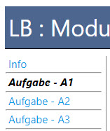
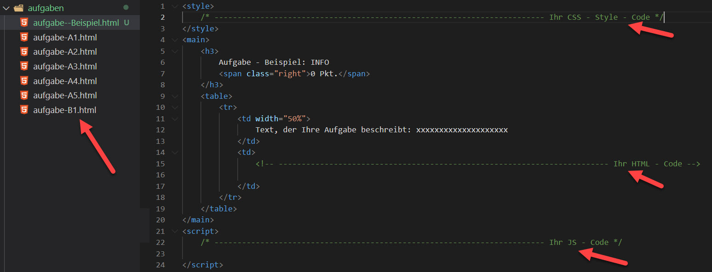

Allgemeine Informationen
Auf der linken Seite sind die Aufgaben, welche dann rechts angezeigt werden

Die HTML - Dateien die Sie ändern müssen sind in dem Verzeichnis "aufgaben"

Sie können Ihren CSS, HTML und JS Code in der entsprechenden Datei die zur Aufgabe gehört eintragen, Sie müssen
also keine weiteren Dateien erstellen oder die ausserhalb der Aufgaben verändern.
Im Ordner fonts sind Schriftarten, wenn Sie bei Aufgaben welche benötigen.
Notwenige Bibliotheken sind bereits bei der index.html eingebunden (JQuery, Materialize js & css, Handlebars,
sha256, summernote)
Vorgabe für die Leistungsbeurteilung (LBV_M-294-4)
| Richtzeit |
90 Min. |
| Hilfsmittel |
alle Unterlagen und Übungen aus dem Kurs die sie selber erstellt haben / kein Internet |
| Prüfungsform |
praktisch am Objekt |
| Sozialform |
Einzelarbeit |
Bewertung
| Thema |
A |
B |
C |
D |
E |
F |
G |
Punkte |
| Create und Update mit Formularen |
10 |
14 |
|
2 |
|
|
|
25 |
| Validierung und Errorhandling |
|
3 |
10 |
|
|
|
|
13 |
| Read |
|
3 |
|
9 |
3 |
|
|
15 |
| Delete |
|
|
|
2 |
|
|
|
2 |
| Sicherung des Zugriffs |
|
|
|
|
|
5 |
3 |
8 |
| Total |
64 |
Praxisbezug:
-
[g5.3]: Sie programmieren effizient, strukturiert und gemäss den relevanten Vorgaben ein Front-End mittels
vorgegebener
Programmiersprachen.
-
[g2.3]: Sie entwerfen Prototypen von Benutzerschnittstellen
Handlungsziele:
-
Richtet die lokale Entwicklungs- und Laufzeitumgebung so ein, dass ein vorgegebenes Projekt entwickelt
werden kann.
[g5.1]
-
Programmiert mittels vorgegebener Technologie und mit Hilfe eines existierenden, dokumentierten Back-Ends
ein
effizientes, strukturiertes Front-End einer interaktiven Webapplikation, welches die Verwaltung (Create,
Read, Update,
Delete) von Daten ermöglicht und hält sich dabei an relevante Vorgaben. [g5.3, g2.6, g2.4, g2.2]
-
Programmiert das Front-End einer interaktiven Webapplikation so, dass die einzelnen CRUD-Elemente des
Front-Ends über
einen permanenten Link erreichbar sind. [g5.3]
-
Überprüft Zwischenergebnisse mit den Anforderungen (funktional, nichtfunktional, Sicherheit) und nimmt
laufend
Korrekturen vor. [g5.4, g2.6]
-
Hält vorgegebene Coderichtlinien ein und überprüft laufend deren Einhaltung. [g5.5]
-
Legt Änderungen und Erweiterungen der Implementierung übersichtlich und zuverlässig in einem
Softwareverwaltungssystem
ab. [g5.6]
-
Schützt mindestens einen Bereich des Front-Ends vor anonymen Zugriffen. [g5.3]